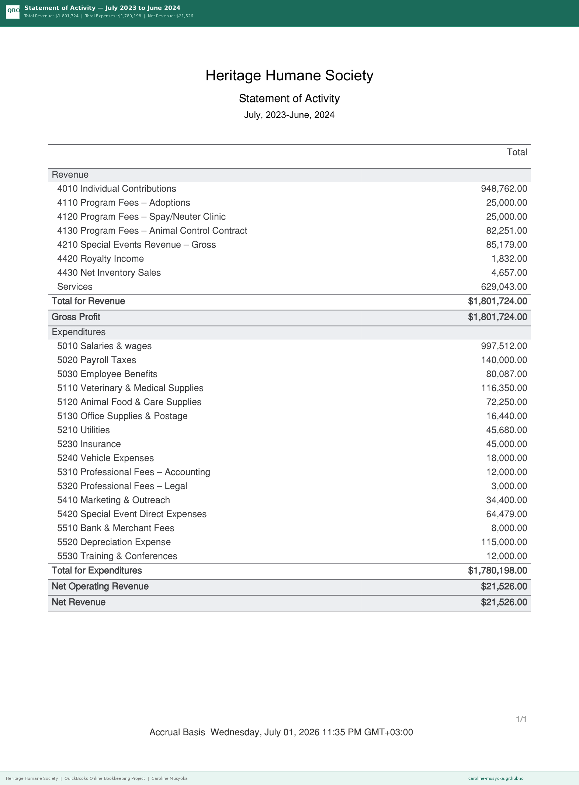
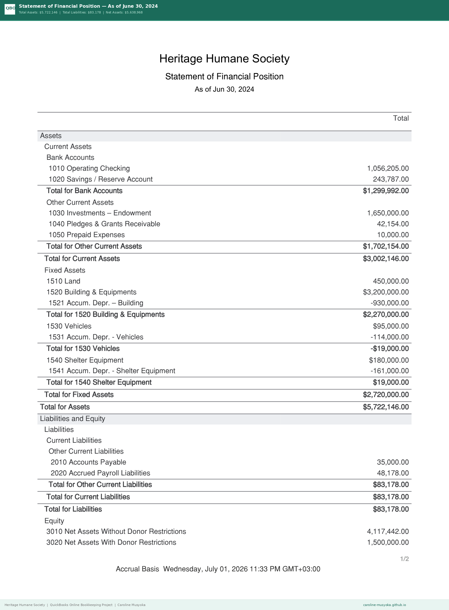
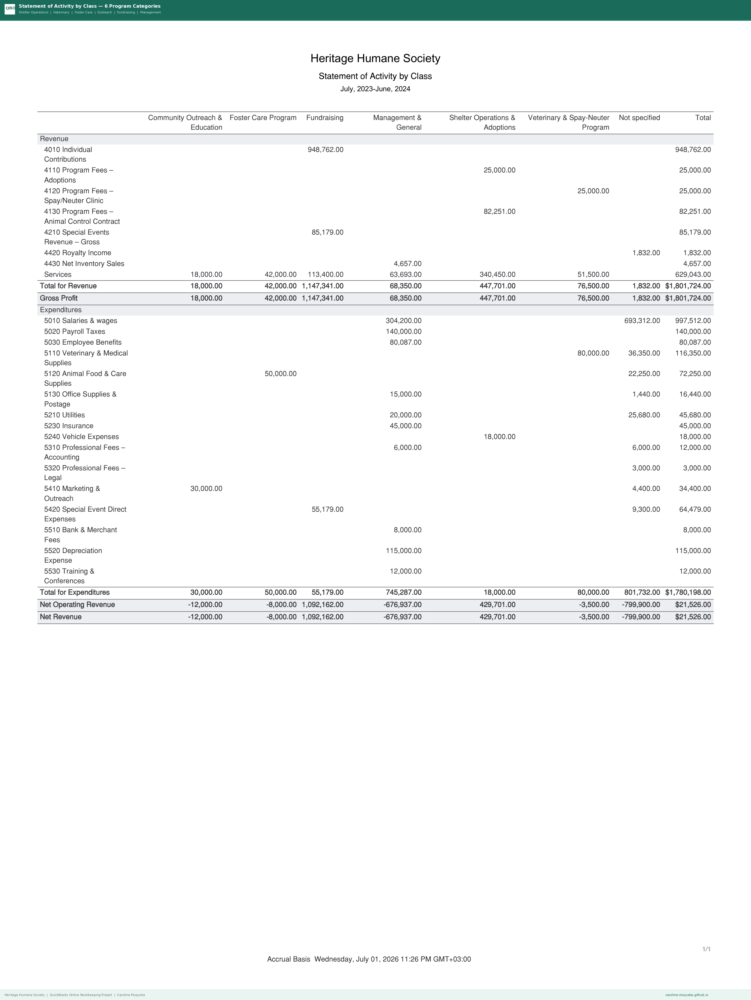
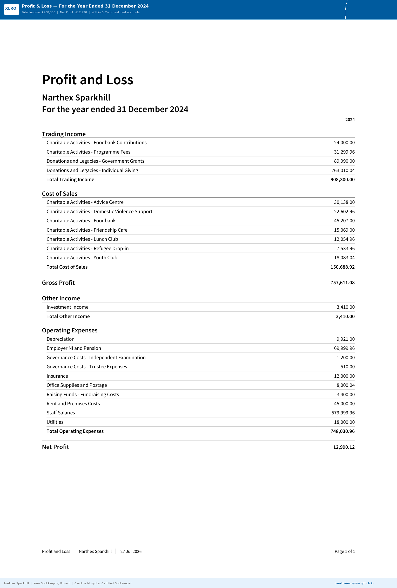
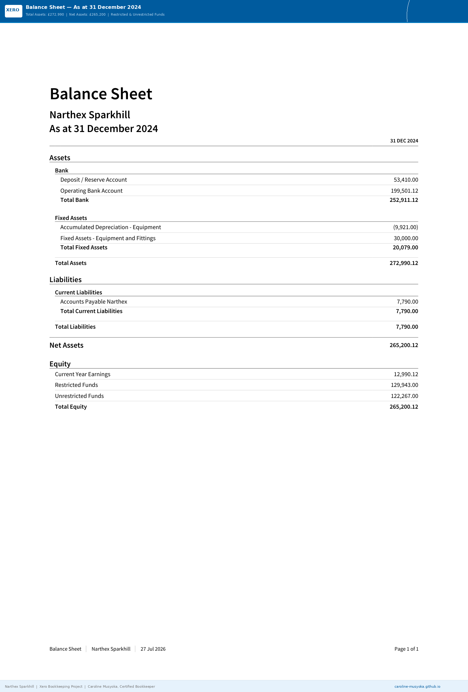
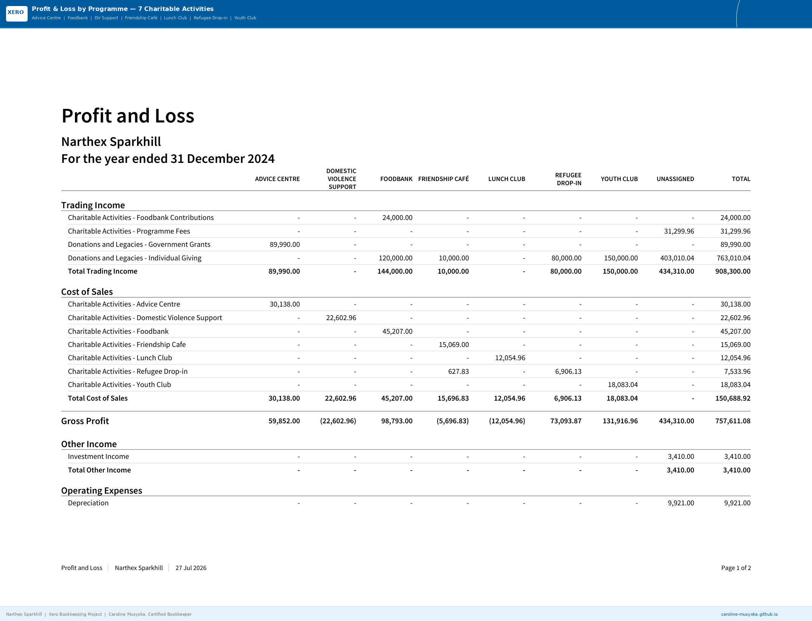
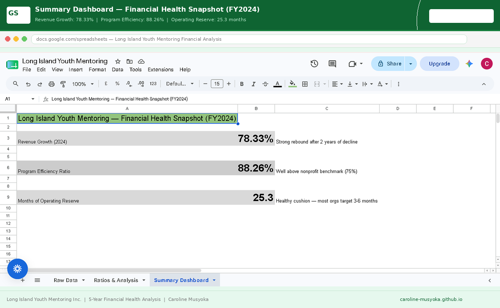
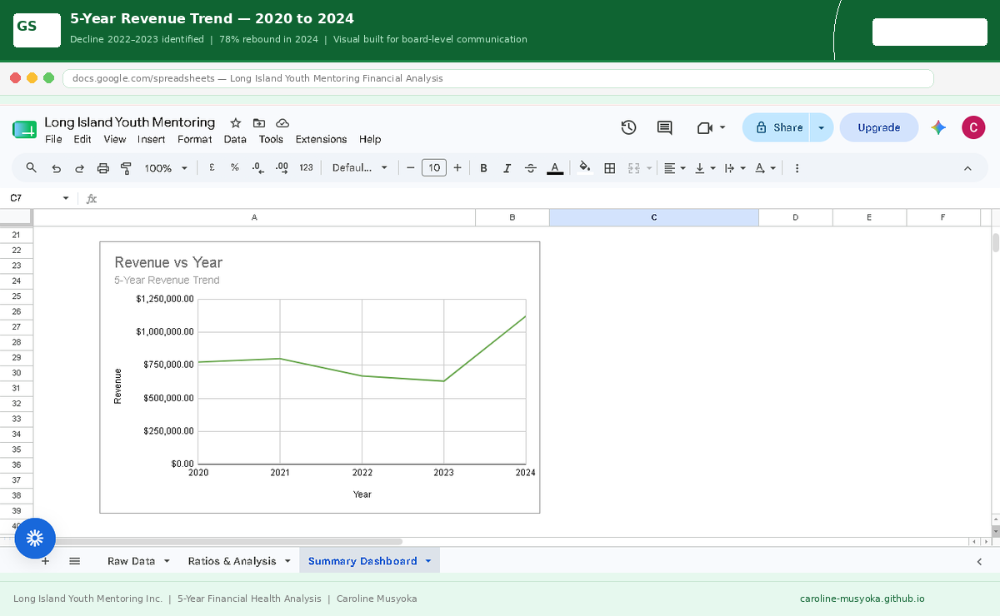
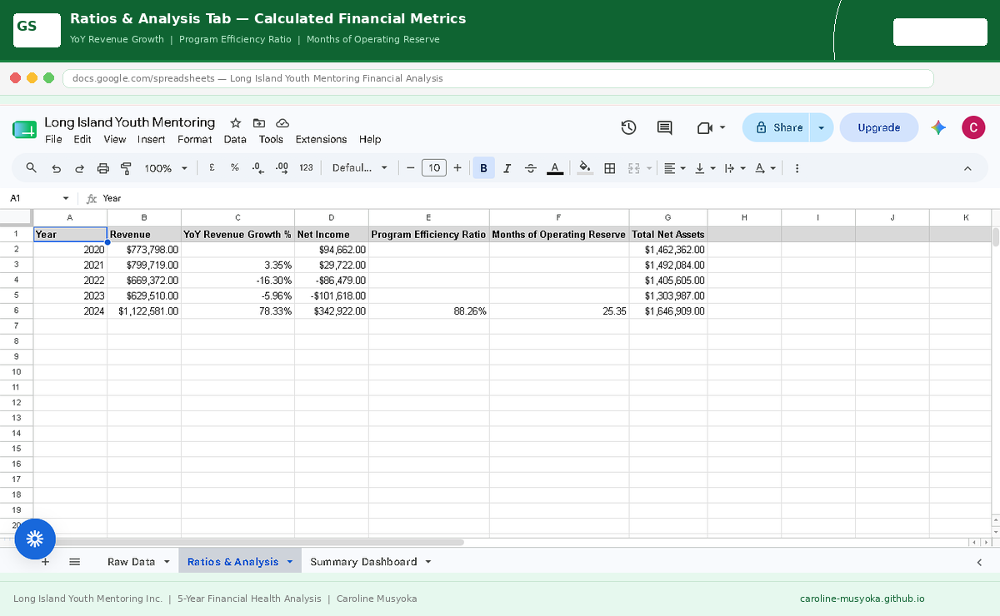

I'm a QuickBooks & Xero certified bookkeeper working with nonprofits and small businesses across the US, UK and beyond. Rather than tell you I'm good at this, I'd rather show you — every case study below walks through the financial statements I produced, reconciled against public filings, so you can see the standard of work before we even talk.
Reconstructed 12 months of books from scratch: chart of accounts, fund tracking, vendor/donor records, and all 4 nonprofit financial statements — landing within 1.6% of the org's real filed figures.



Full Xero setup under UK Charities SORP standards — restricted vs. unrestricted funds, 7 programme categories, a full year of transactions — reconciled to within 0.3% of filed accounts.



Turned 5 years of raw IRS filings into the 3 numbers a board actually needs: revenue trend, program efficiency, and operating reserve — with CPA feedback incorporated into the final model.



Caroline was one of the most reliable people on my team at KMTC. She managed our ledgers, reconciliations and expense tracking in Excel and IFMIS with real precision — the kind that catches a discrepancy before it becomes a real problem. She was ahead of the curve on digital workflows long before remote work became normal. I wasn't surprised when she moved into remote bookkeeping; she already had the discipline it takes. I recommend her without hesitation.
Caroline transformed how we handle our finances. She keeps our books in QuickBooks pristine and tax-ready, and she didn't stop there — she integrated our CRM and brought in AI tools to automate the repetitive work, turning a clunky process into something genuinely efficient. She's organized, communicative, and works with real autonomy across time zones. If you want a bookkeeper who actually modernizes your finance function, I can't recommend her highly enough.
I'm currently accepting new clients — nonprofits, small businesses, and remote teams. Reach out and let's talk about what your books need.